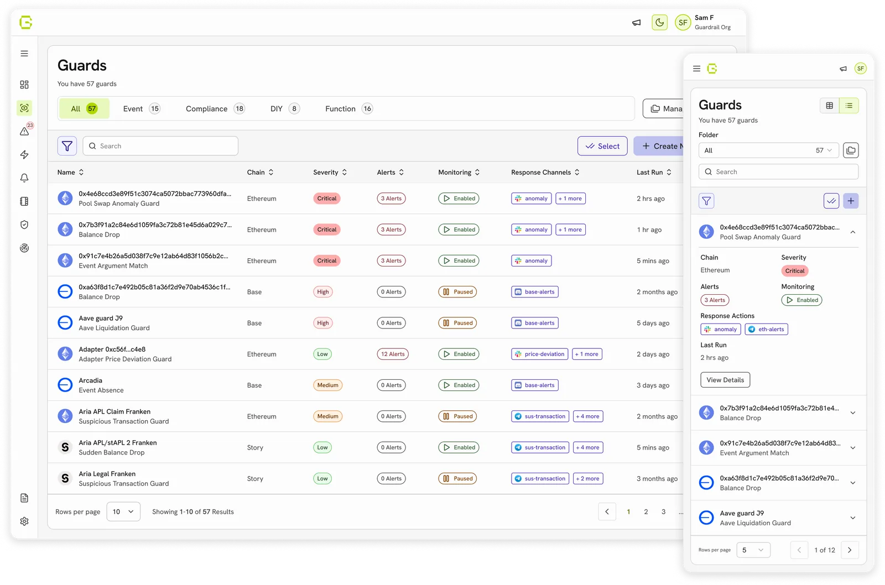
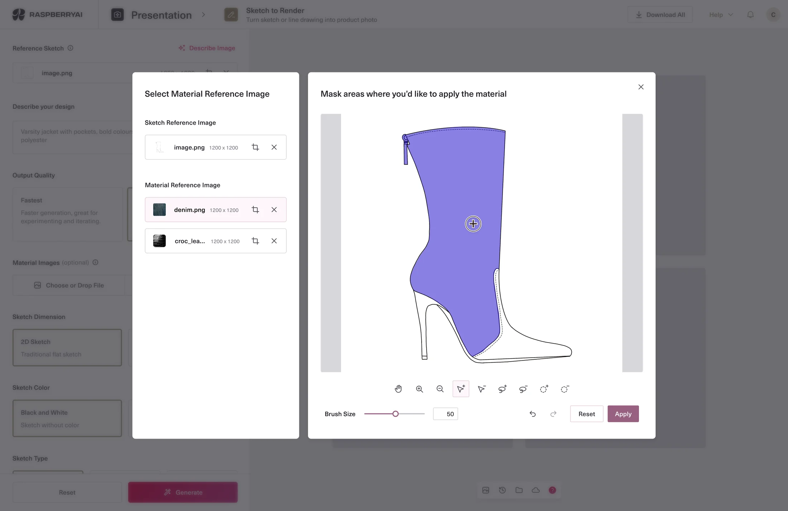
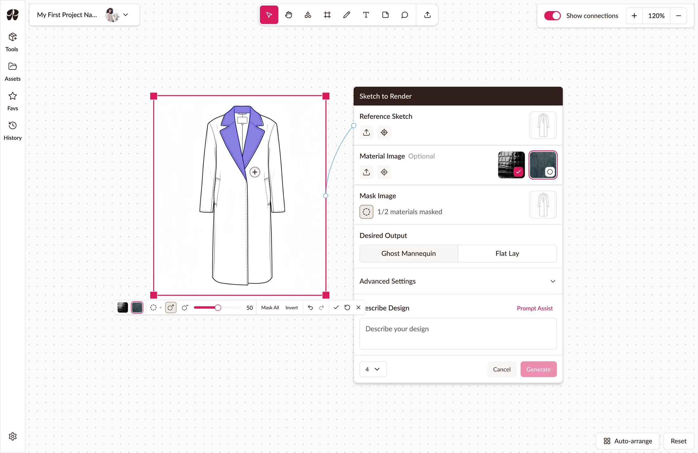
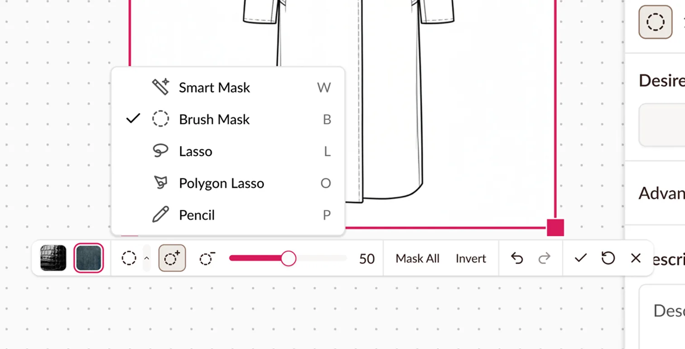
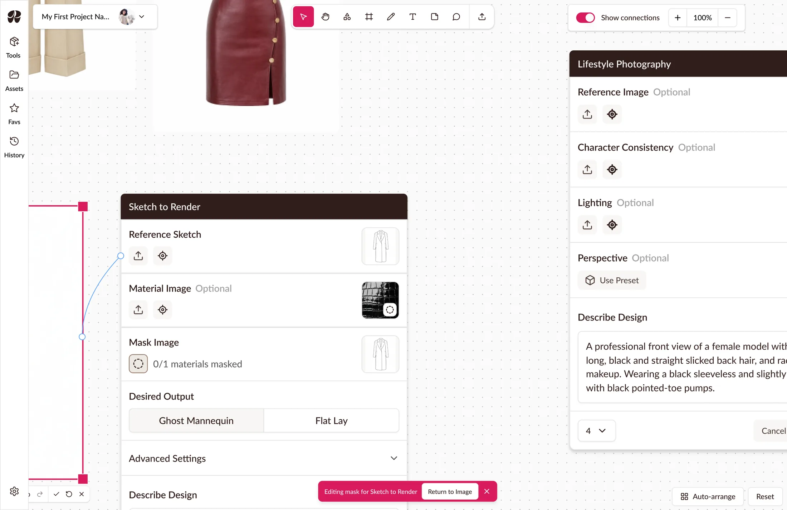
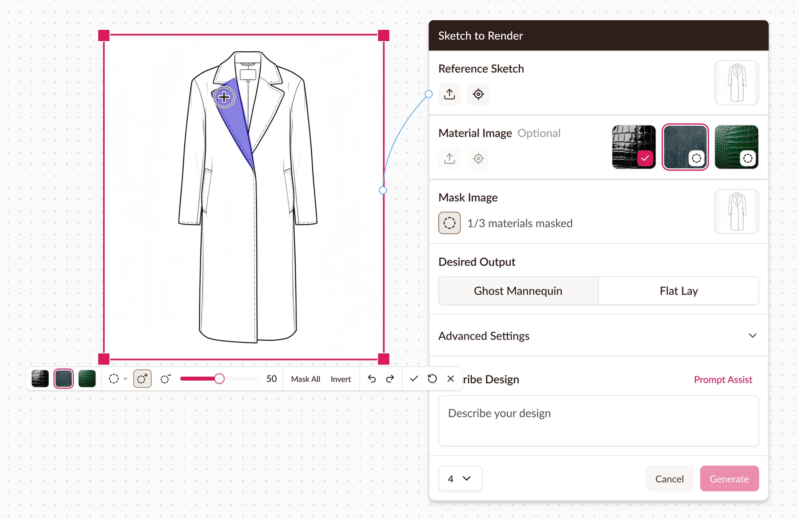
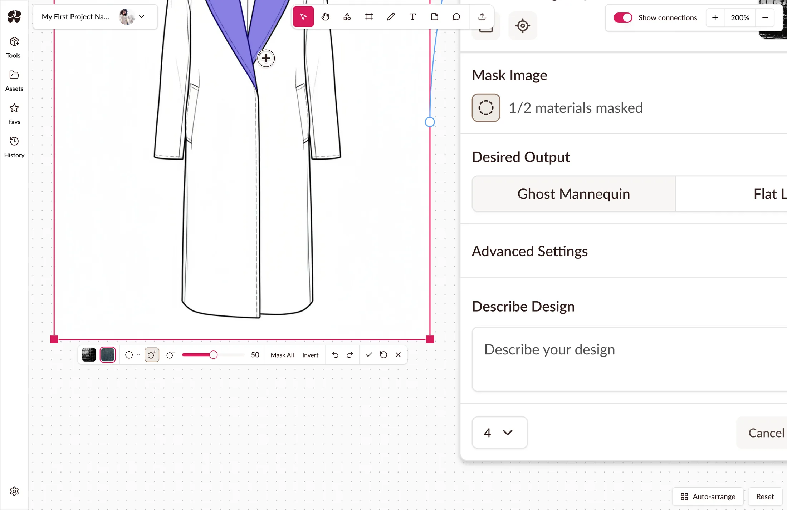
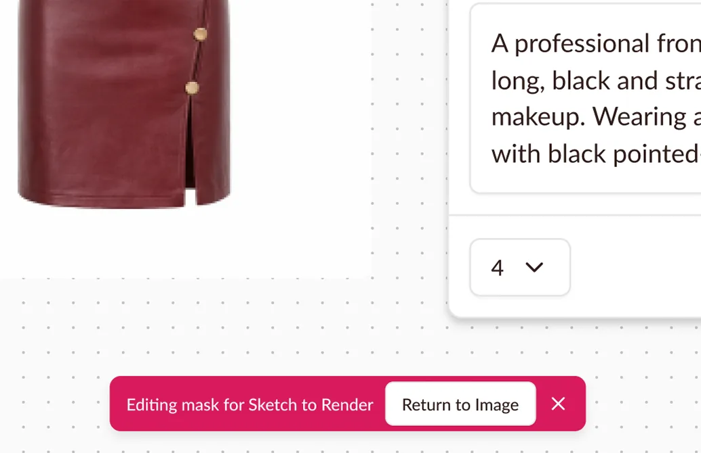
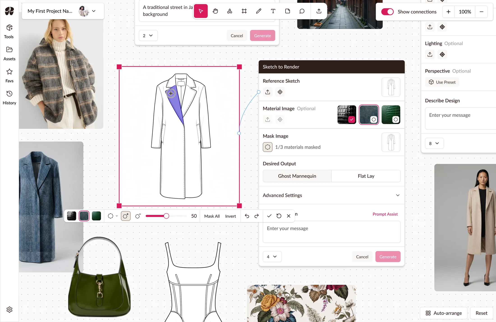
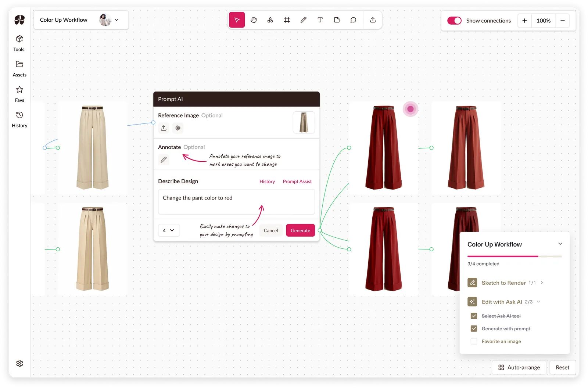

Guardrail: A System for Designers & Developers
Reduced developers’ custom styling by 90% and gave designers the foundation to expand the product.
Introduced a new interaction model that keeps fashion designers in context, speeding up their workflow.

Masking is where a designer makes decisions worth comparing. In Classic, it happened in a modal, forcing a context switch every time a designer wants to see other ideas and adding a step to their workflow.

Porting the modal was the option developers favored because it was a proven pattern and had the least engineering lift. But a modal hides the rest of the board, cutting designers off from other options they might want to reference. I pushed for a masking mode instead, so the canvas stays in view while they work.

Moving onto the canvas traded space for navigation. Selection tools went into a dropdown, one click away, and masking’s pan and zoom merged into the canvas’s.

Sharing the canvas’s navigation raised the next question: should the canvas stay live while masking? A locked canvas was the safer choice, but it would leave the board in view and out of reach, just like the modal, so I kept it live.
The cost is that a designer can pan away mid-edit and lose their place. A snackbar appears when the image leaves view, taking them back in one click.

The node tracks up to three materials and reopens masking in a click. Generation disabled until all are masked, with a count of what’s left.

The toolbar is anchored to the image at a fixed size so it can be located and used at any zoom.
Undo, redo, save, reset, and close. Two exits: save then leave, or leave without saving.

Pan away and masking stays open, with a persistent snackbar to return or exit. A self-dismissing one would fail anyone slow to reach it.
Some behaviors are easier shown than described, so I prototyped masking mode with Claude and demoed it live to the Raspberry team. It shipped mostly as designed, with one change: a text reset button instead of an icon.

Designers now mask on the canvas, and can reference other designs without the context switch. However, masking isn’t tracked, so I can’t yet show how much it sped up their workflow. The next step is measuring how often designers check other options mid-mask, and the time from upload to generation in Boards versus Classic.
The dropdown kept the toolbar compact but added a click to every tool switch, so it’s the first thing I’d revisit. With usage data, I’d surface the two or three most-used tools and leave the rest in the dropdown.
Beyond this design, masking set a precedent. Edit mode in Boards started the same way masking did, with Classic’s Edit tool brought onto the canvas as a modal. I documented the masking toolbar as a reusable pattern, giving edit mode a path from a modal to a mode in Boards.

Reduced developers’ custom styling by 90% and gave designers the foundation to expand the product.

Unified fragmented tools into guided workflows, leading 68.5% of fashion designers who start one to generate.

Turned static signage into voice-guided way-finding, with tailored solutions across app and kiosk.